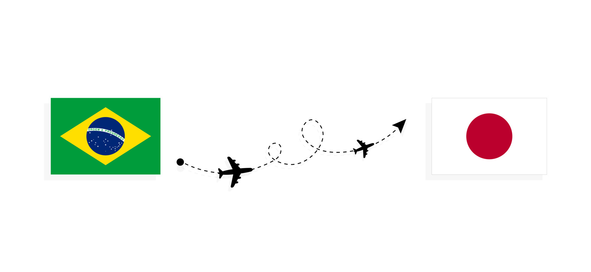

Japão anuncia que pode isentar brasileiros de visto para entrada no país
Governo japonês disse que vai iniciar procedimentos para adotar isenção para estadias de curta duração. Anúncio foi feito após encontro de Lula com o primeiro-ministro do país.
A possibilidade foi comunicada pelo Ministério das Relações Exteriores do Japão após o encontro do presidente Lula com o primeiro-ministro japonês, Fumio Kishida. "O primeiro-ministro Kishida anunciou que o governo do Japão iniciaria procedimentos para a introdução da isenção de visto de curta duração para portadores de passaporte comum do Brasil", diz o comunicado.
Fonte da notícia: https://g1.globo.com/mundo/noticia/2023/05/20/japao-anuncia-possibilidade-de-isentar-brasileiros-de-visto-para-entrada-no-pais.ghtml